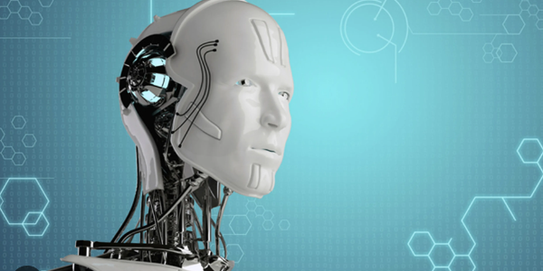

Para este año tendremos al ingeniero Pedro Pérez, autor de el bestseller "Hacia dónde va la IA". También estará la ingeniera Sara Ortiz, quién abrirá el congreso
Se realizarán varios eventos espectaculares, sobre el presente y futuro de la ingeniería informática No olvides registrarte, en evento será inolvidable y nunca antes visto. Al igual que Pedro Peréz, tendremos la presencia del Decano de la Universisad Informática de Colombia, presentando la nueva invención de ambientes reales en Realidad Virtual.
En cuanto al avance de la IA, tendremos al director de la Agencia Nacional de la IA - ANIA, presentando las nuevas naves espaciales que nos llevarán a Alpha Centaury el próximo año, en un viaje que durará tan solo 9 años
| Actividad | Duración | Expositor | Aula |
|---|---|---|---|
| Bienvenida | 30 minutos | Presidente del Congreso | Auditorio |
| Nuevos alcances de la IoT | 1 hora y media | Esteban Salas | Aula 403A2 |
| La IA en nuestros campos | 2 horas | Sara Ortiz | Aula 402 |
| La IA en el espacio | 2 horas | Eduardo Vargas - ANIA | Auditorio |
| Futuro de la Ingeniería Informática | 2 horas | Pedro Pérez | Aula 303 |